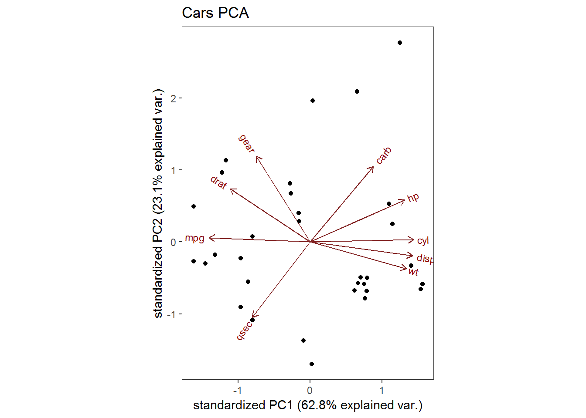
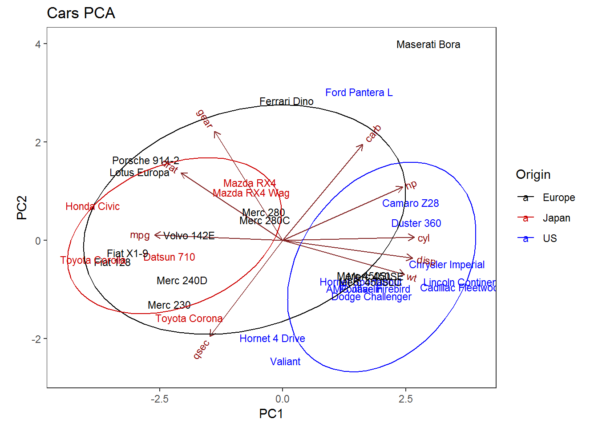
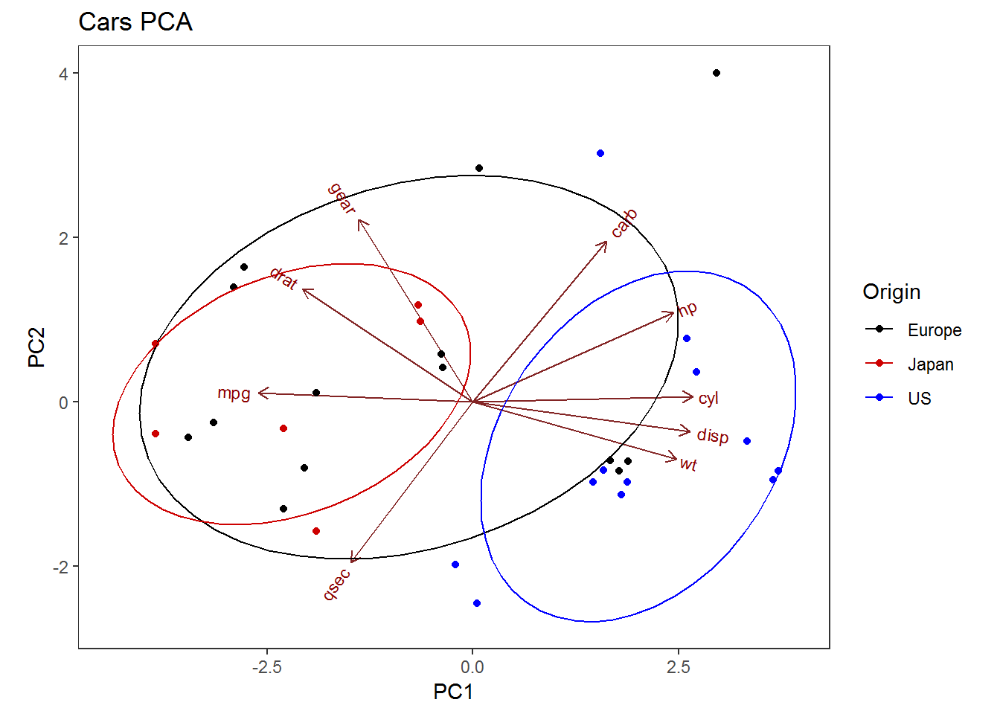
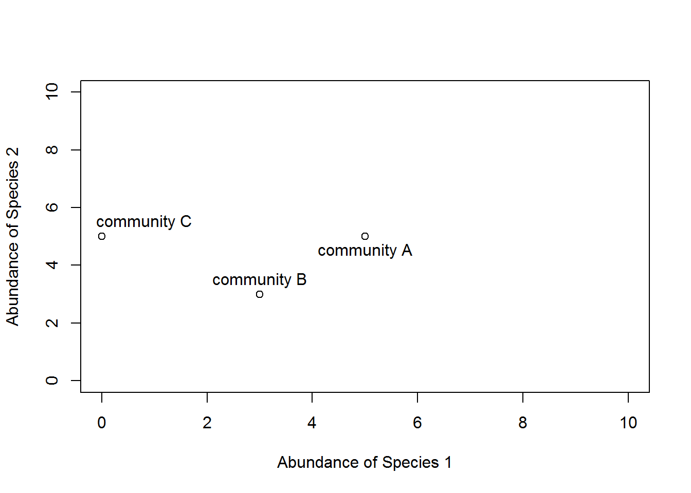
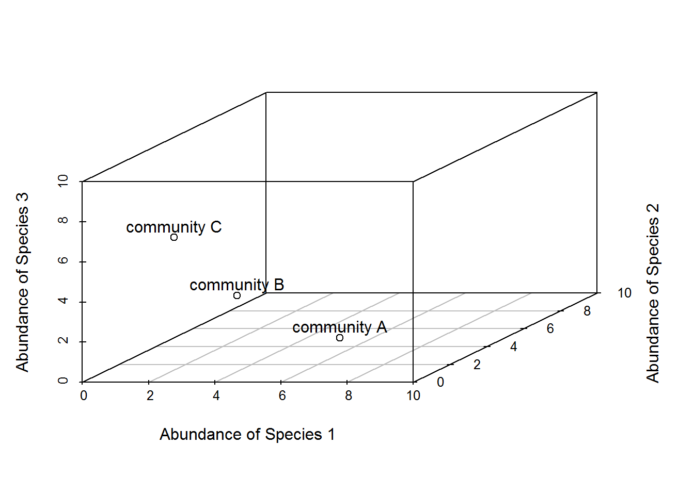
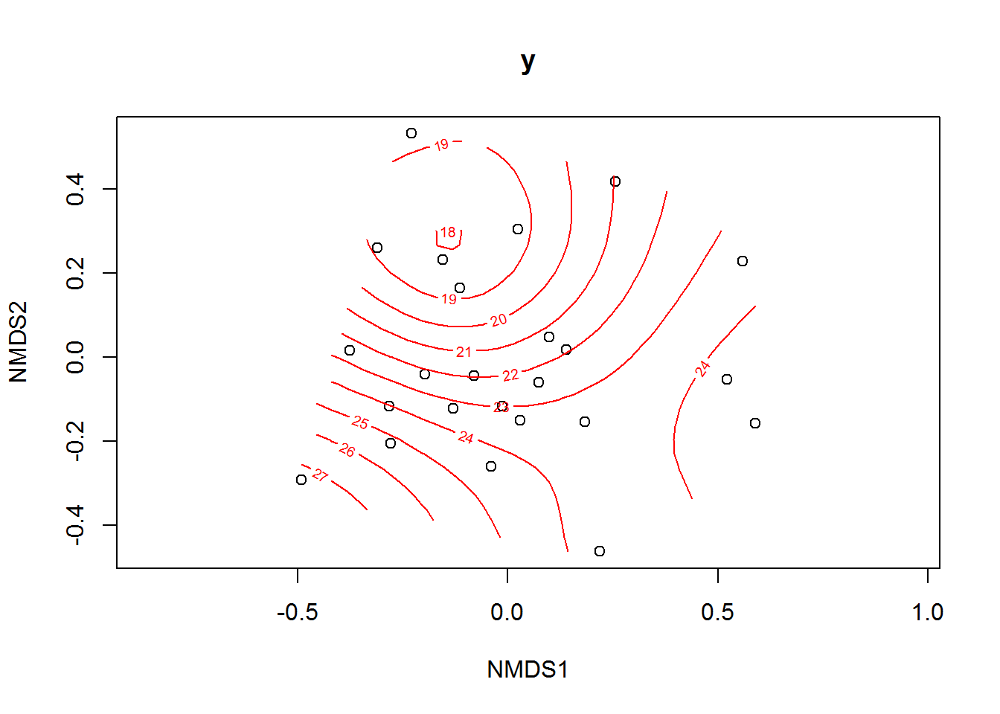

Ordination
Tatiana Guarin, Laura Haak, Lacey Hankin, Santiago Villamarin
For those wishing to follow along with the R-based demo in class, click here for the companion R script for this lecture.
Follow along with our powerpoint presentation here: https://docs.google.com/presentation/d/1xRazCfJ_aoh8UeT2U6FkM07XTodYvCcO4tao-a4ORSQ/edit?usp=sharing
Exploratory Data Analysis
Ordination is a very useful method for complex and imperfect datasets. It is a great tool for exploratory data analysis and visualization of complex systems. Take the following data for example:
suppressWarnings(library(vegan))
suppressWarnings(library(MASS))
data(varespec)
head(varespec)## Callvulg Empenigr Rhodtome Vaccmyrt Vaccviti Pinusylv Descflex Betupube
## 18 0.55 11.13 0.00 0.00 17.80 0.07 0.00 0
## 15 0.67 0.17 0.00 0.35 12.13 0.12 0.00 0
## 24 0.10 1.55 0.00 0.00 13.47 0.25 0.00 0
## 27 0.00 15.13 2.42 5.92 15.97 0.00 3.70 0
## 23 0.00 12.68 0.00 0.00 23.73 0.03 0.00 0
## 19 0.00 8.92 0.00 2.42 10.28 0.12 0.02 0
## Vacculig Diphcomp Dicrsp Dicrfusc Dicrpoly Hylosple Pleuschr Polypili
## 18 1.60 2.07 0.00 1.62 0.00 0.0 4.67 0.02
## 15 0.00 0.00 0.33 10.92 0.02 0.0 37.75 0.02
## 24 0.00 0.00 23.43 0.00 1.68 0.0 32.92 0.00
## 27 1.12 0.00 0.00 3.63 0.00 6.7 58.07 0.00
## 23 0.00 0.00 0.00 3.42 0.02 0.0 19.42 0.02
## 19 0.00 0.00 0.00 0.32 0.02 0.0 21.03 0.02
## Polyjuni Polycomm Pohlnuta Ptilcili Barbhatc Cladarbu Cladrang Cladstel
## 18 0.13 0.00 0.13 0.12 0.00 21.73 21.47 3.50
## 15 0.23 0.00 0.03 0.02 0.00 12.05 8.13 0.18
## 24 0.23 0.00 0.32 0.03 0.00 3.58 5.52 0.07
## 27 0.00 0.13 0.02 0.08 0.08 1.42 7.63 2.55
## 23 2.12 0.00 0.17 1.80 0.02 9.08 9.22 0.05
## 19 1.58 0.18 0.07 0.27 0.02 7.23 4.95 22.08
## Cladunci Cladcocc Cladcorn Cladgrac Cladfimb Cladcris Cladchlo Cladbotr
## 18 0.30 0.18 0.23 0.25 0.25 0.23 0.00 0.00
## 15 2.65 0.13 0.18 0.23 0.25 1.23 0.00 0.00
## 24 8.93 0.00 0.20 0.48 0.00 0.07 0.10 0.02
## 27 0.15 0.00 0.38 0.12 0.10 0.03 0.00 0.02
## 23 0.73 0.08 1.42 0.50 0.17 1.78 0.05 0.05
## 19 0.25 0.10 0.25 0.18 0.10 0.12 0.05 0.02
## Cladamau Cladsp Cetreric Cetrisla Flavniva Nepharct Stersp Peltapht
## 18 0.08 0.02 0.02 0.00 0.12 0.02 0.62 0.02
## 15 0.00 0.00 0.15 0.03 0.00 0.00 0.85 0.00
## 24 0.00 0.00 0.78 0.12 0.00 0.00 0.03 0.00
## 27 0.00 0.02 0.00 0.00 0.00 0.00 0.00 0.07
## 23 0.00 0.00 0.00 0.00 0.02 0.00 1.58 0.33
## 19 0.00 0.00 0.00 0.00 0.02 0.00 0.28 0.00
## Icmaeric Cladcerv Claddefo Cladphyl
## 18 0 0 0.25 0
## 15 0 0 1.00 0
## 24 0 0 0.33 0
## 27 0 0 0.15 0
## 23 0 0 1.97 0
## 19 0 0 0.37 0sum(varespec==0)/(nrow(varespec)*ncol(varespec)) # 42% of the data are zeroes## [1] 0.4185606dim(varespec) # 44 different species, not distributed evenly among sites## [1] 24 44There is a lot of complexity in this data, so this would be a good dataset to explore more with ordination. We will pick back up with this dataset later in the tutorial.
Principal Components Analysis
For linear mapping, ordination becomes a matter of rotation and projection. These methods are eigenvector methods. The most common methods are principle component analysis (PCA) and correspondence analysis. Here, we will focus on PCA, since it is commonly used. PCA is a useful technique for exploratory data analysis, allowing us to better visualize variation in a dataset, and similarities among samples with many variables. Principal components are the directions where there is the most variance, so the first component shows the most variance in the data. PCA is a type of linear transformation that fits the data into a new coordinate system with the most variance explained on the first axis, and the subsequent perpendicular axes explain lesser variance. This transforms many correlaed variables into uncorrelated principal components, because highly correlated variables will all be represented in the same principal component. In PCA, you will hear about “eigenvalues” and “eigenvectors.” Eigenvectors are directions, while the eigenvalues tell you how much variance there is in the data in that direction. So, the eigenvector with the highest eigenvalue is the first principal component.
Let’s run an example in R!
We can use base R for PCA. There is also PCA functionality in the commonly used ordination package ‘vegan.’ We will demonstrate a simple PCA example with the mtcars dataset, which we have seen before.
data(mtcars)
head(mtcars)## mpg cyl disp hp drat wt qsec vs am gear carb
## Mazda RX4 21.0 6 160 110 3.90 2.620 16.46 0 1 4 4
## Mazda RX4 Wag 21.0 6 160 110 3.90 2.875 17.02 0 1 4 4
## Datsun 710 22.8 4 108 93 3.85 2.320 18.61 1 1 4 1
## Hornet 4 Drive 21.4 6 258 110 3.08 3.215 19.44 1 0 3 1
## Hornet Sportabout 18.7 8 360 175 3.15 3.440 17.02 0 0 3 2
## Valiant 18.1 6 225 105 2.76 3.460 20.22 1 0 3 1dim(mtcars)## [1] 32 11cars<-mtcars[,-c(8:9)] # remove categorical variables
mtcars.pca<-prcomp(mtcars[,c(1:7,10,11)], center = TRUE,scale. = TRUE)
summary(mtcars.pca)## Importance of components:
## PC1 PC2 PC3 PC4 PC5 PC6
## Standard deviation 2.3782 1.4429 0.71008 0.51481 0.42797 0.35184
## Proportion of Variance 0.6284 0.2313 0.05602 0.02945 0.02035 0.01375
## Cumulative Proportion 0.6284 0.8598 0.91581 0.94525 0.96560 0.97936
## PC7 PC8 PC9
## Standard deviation 0.32413 0.2419 0.14896
## Proportion of Variance 0.01167 0.0065 0.00247
## Cumulative Proportion 0.99103 0.9975 1.00000The output shows that we have 9 principal components. Each of these explains a percentage of the total variation in the dataset. For example, PC1 explains about 63% of the total variance and PC2 explains 23% of the total variance. This is good, as we can see that with just two principal components, we can explain a lot of the variation in the data.
str(mtcars.pca) # Look at PCA object## List of 5
## $ sdev : num [1:9] 2.378 1.443 0.71 0.515 0.428 ...
## $ rotation: num [1:9, 1:9] -0.393 0.403 0.397 0.367 -0.312 ...
## ..- attr(*, "dimnames")=List of 2
## .. ..$ : chr [1:9] "mpg" "cyl" "disp" "hp" ...
## .. ..$ : chr [1:9] "PC1" "PC2" "PC3" "PC4" ...
## $ center : Named num [1:9] 20.09 6.19 230.72 146.69 3.6 ...
## ..- attr(*, "names")= chr [1:9] "mpg" "cyl" "disp" "hp" ...
## $ scale : Named num [1:9] 6.027 1.786 123.939 68.563 0.535 ...
## ..- attr(*, "names")= chr [1:9] "mpg" "cyl" "disp" "hp" ...
## $ x : num [1:32, 1:9] -0.664 -0.637 -2.3 -0.215 1.587 ...
## ..- attr(*, "dimnames")=List of 2
## .. ..$ : chr [1:32] "Mazda RX4" "Mazda RX4 Wag" "Datsun 710" "Hornet 4 Drive" ...
## .. ..$ : chr [1:9] "PC1" "PC2" "PC3" "PC4" ...
## - attr(*, "class")= chr "prcomp"You can examine the PCA a bit more with the above function. “Center”, “scale”, and “sdev” describe the center point, scaling, and standard deviation of each principal component. The correlation between the initial variables and the principal components is “rotation,” and the values of each sample in terms of their principal components is “x”.
Plotting the PCA
We can represent each sample in ordination space, along with the initial variables using a biplot. A biplot will show how similar samples are to each other in ordination space, and how each variable contributes to each principal component. The origin represents the variable averages, and variables then increase in the direction of the arrow. The longer the arrow, the stronger the increase in that variable.
biplot(mtcars.pca) # This is a little messy with sample names
The plot is a bit difficult to see, as the samples are crowded at the center. We can try another package for better plotting. GGbiplot is based on the same functionality of ggplot, so many of the same arguments can help customize plots.
suppressWarnings(library(devtools))##
## Attaching package: 'devtools'## The following object is masked from 'package:permute':
##
## check#install_github("vqv/ggbiplot")
suppressWarnings(library(ggbiplot))## Loading required package: ggplot2## Loading required package: plyr## -------------------------------------------------------------------------## You have loaded plyr after dplyr - this is likely to cause problems.
## If you need functions from both plyr and dplyr, please load plyr first, then dplyr:
## library(plyr); library(dplyr)## -------------------------------------------------------------------------##
## Attaching package: 'plyr'## The following objects are masked from 'package:dplyr':
##
## arrange, count, desc, failwith, id, mutate, rename, summarise,
## summarize## Loading required package: scales## Loading required package: gridggbiplot(mtcars.pca)+
theme_bw()+ # removes gray background
theme(panel.grid.major=element_blank(),panel.grid.minor=element_blank())+ # removes gridlines
ggtitle("Cars PCA")
This is a little cleaner, but we lose the sample labels. The variables with more horizontal arrows contribute more to the first principal component, while the more vertical arrows contribute more to the second principal component. Let’s try adding the car names back.
ggbiplot(mtcars.pca, labels=rownames(mtcars))+
theme_bw()+ # removes gray background
theme(panel.grid.major=element_blank(),panel.grid.minor=element_blank())+ # removes gridlines
ggtitle("Cars PCA")+
xlab("PC1")+
ylab("PC2")
It’s still a bit hard to see some of the car names, but we can see which cars are most similar. For example, the cluster at the top are all sports cars. We might want to go a little further and examine clusters of cars. If we separate the cars into groups by origin, we could also look at how these groups appear in ordination space.
mtcars.country <- c(rep("Japan", 3), rep("US",4), rep("Europe", 7),rep("US",3), "Europe", rep("Japan", 3), rep("US",4), rep("Europe", 3), "US", rep("Europe", 3))
ggbiplot(mtcars.pca,ellipse=TRUE, labels=rownames(mtcars), groups=mtcars.country, obs.scale=1, var.scale=1)+ # ellipse=T puts ellipses around groups, obs and var scale help space out the plot a bit
scale_colour_manual(name="Origin", values= c("black", "red3", "blue"))+ # change default grouping colors
theme_bw()+ # removes gray background
theme(panel.grid.major=element_blank(),panel.grid.minor=element_blank())+ # removes gridlines
ggtitle("Cars PCA")+
xlab("PC1")+
ylab("PC2")
# Simplify the plot again to remove car names.
ggbiplot(mtcars.pca,ellipse=TRUE, groups=mtcars.country, obs.scale=1, var.scale=1)+ # ellipse=T puts ellipses around groups, obs and var scale help space out the plot a bit
scale_colour_manual(name="Origin", values= c("black", "red3", "blue"))+ # change default grouping colors
theme_bw()+ # removes gray background
theme(panel.grid.major=element_blank(),panel.grid.minor=element_blank())+ # removes gridlines
ggtitle("Cars PCA")+
xlab("PC1")+
ylab("PC2")
We can see that the American cars form a distinct cluster at the right, with high values of cyl, disp, and wt. Japanese cars generally have high mpg. If we wanted to model this dataset, the ordination tells us that these variables might be most useful in classifying car origin.
Non-metric multidimensional scaling (NMDS)
PCA is a really useful ordination method if you have linear relationships between variables. But, for nonlinear relationships, or at least flexibility in what the relationship might look like, many people choose to work with NMDS. NMDS is typically used to compare different community compositions.
The Concept
Consider a single axis of abundance representing a single species: We can plot each community on that axis depending on the abundance of species 1 within it.
plot(0:10,0:10,type="n",axes=F,xlab="Abundance of Species 1",ylab="")
axis(1)
points(5,0); text(5.5,0.5,labels="community A")
points(3,0); text(3.2,0.5,labels="community B")
points(0,0); text(0.8,0.5,labels="community C")
Now consider a second axis of abundance representing a different species. Communities can be plotted along both axes depending on the abundance of species within it.
plot(0:10,0:10,type="n",xlab="Abundance of Species 1",
ylab="Abundance of Species 2")
points(5,5); text(5,4.5,labels="community A")
points(3,3); text(3,3.5,labels="community B")
points(0,5); text(0.8,5.5,labels="community C")
Now consider a THIRD axis of abundance representing yet another species.
library(scatterplot3d)
d=scatterplot3d(0:10,0:10,0:10,type="n",xlab="Abundance of Species 1",
ylab="Abundance of Species 2",
zlab="Abundance of Species 3")
d$points3d(5,5,0); text(d$xyz.convert(5,5,0.5),labels="community A")
d$points3d(3,3,3); text(d$xyz.convert(3,3,3.5),labels="community B")
d$points3d(0,5,5); text(d$xyz.convert(0,5,5.5),labels="community C")
You can see that if we kept going, it would become impossible to represent the communities. So the goal of NMDS is to represent communities as accurately as possible using a reduced number of dimensions.
NMDS
The goal of NMDS is to represent the original position of communities in multidimensional space using a reduced number of dimensions that can be easily visualized. NMDS does not use the absolute abundances of species in communities, but rather their rank orders. Rank orders allow much more flexibility to analyze many types of data. The NMDS procedure is iterative and follows these steps:
- Define the positions of communities in multidimensional space
- Specify the number of reduced dimensions (typically 2)
- Construct an initial configuration of the samples in 2-dimensions
- Regress distances in this initial configuration against the observed distances
- Determine the stress, or the disagreement between 2-D configuration and predicted values from the regression. If the 2-D configuration perfectly preserves the original rank orders, then a plot comparing them should monotonically increase. The extent to which the points on the 2-D configuration differ from this monotonically increasing line determines the degree of stress.
- If stress is high, we reposition the points in 2-D in the direction of decreasing stress, and repeat until stress is minimized or below a certain threshold. A common rule of thumb is if stress < 0.05, 2-D is an excellent representation of the original community rank orders. Stress > 0.2 is considered poor representation.
NMDS requires a distance matrix, or a matrix of dissimilarities between communities. Raw Euclidean distances are not ideal: they are sensitive to total abundances and species absences. Most NMDS uses Bray-Curtis dissimilarity index, because it is robust to changes in units, additions/removals of species or communities, and it can recognize differences in total abundances even when relative abundances are the same.
Let’s run an example in R!
Load libraries and the data. We are using the varespec data frame, which has 24 rows and 44 columns. Columns are estimated cover values of 44 species. Each row is a different plot. This dataset represents the community-by-species matrix that is required of NMDS.
data(varespec)
head(varespec)## Callvulg Empenigr Rhodtome Vaccmyrt Vaccviti Pinusylv Descflex Betupube
## 18 0.55 11.13 0.00 0.00 17.80 0.07 0.00 0
## 15 0.67 0.17 0.00 0.35 12.13 0.12 0.00 0
## 24 0.10 1.55 0.00 0.00 13.47 0.25 0.00 0
## 27 0.00 15.13 2.42 5.92 15.97 0.00 3.70 0
## 23 0.00 12.68 0.00 0.00 23.73 0.03 0.00 0
## 19 0.00 8.92 0.00 2.42 10.28 0.12 0.02 0
## Vacculig Diphcomp Dicrsp Dicrfusc Dicrpoly Hylosple Pleuschr Polypili
## 18 1.60 2.07 0.00 1.62 0.00 0.0 4.67 0.02
## 15 0.00 0.00 0.33 10.92 0.02 0.0 37.75 0.02
## 24 0.00 0.00 23.43 0.00 1.68 0.0 32.92 0.00
## 27 1.12 0.00 0.00 3.63 0.00 6.7 58.07 0.00
## 23 0.00 0.00 0.00 3.42 0.02 0.0 19.42 0.02
## 19 0.00 0.00 0.00 0.32 0.02 0.0 21.03 0.02
## Polyjuni Polycomm Pohlnuta Ptilcili Barbhatc Cladarbu Cladrang Cladstel
## 18 0.13 0.00 0.13 0.12 0.00 21.73 21.47 3.50
## 15 0.23 0.00 0.03 0.02 0.00 12.05 8.13 0.18
## 24 0.23 0.00 0.32 0.03 0.00 3.58 5.52 0.07
## 27 0.00 0.13 0.02 0.08 0.08 1.42 7.63 2.55
## 23 2.12 0.00 0.17 1.80 0.02 9.08 9.22 0.05
## 19 1.58 0.18 0.07 0.27 0.02 7.23 4.95 22.08
## Cladunci Cladcocc Cladcorn Cladgrac Cladfimb Cladcris Cladchlo Cladbotr
## 18 0.30 0.18 0.23 0.25 0.25 0.23 0.00 0.00
## 15 2.65 0.13 0.18 0.23 0.25 1.23 0.00 0.00
## 24 8.93 0.00 0.20 0.48 0.00 0.07 0.10 0.02
## 27 0.15 0.00 0.38 0.12 0.10 0.03 0.00 0.02
## 23 0.73 0.08 1.42 0.50 0.17 1.78 0.05 0.05
## 19 0.25 0.10 0.25 0.18 0.10 0.12 0.05 0.02
## Cladamau Cladsp Cetreric Cetrisla Flavniva Nepharct Stersp Peltapht
## 18 0.08 0.02 0.02 0.00 0.12 0.02 0.62 0.02
## 15 0.00 0.00 0.15 0.03 0.00 0.00 0.85 0.00
## 24 0.00 0.00 0.78 0.12 0.00 0.00 0.03 0.00
## 27 0.00 0.02 0.00 0.00 0.00 0.00 0.00 0.07
## 23 0.00 0.00 0.00 0.00 0.02 0.00 1.58 0.33
## 19 0.00 0.00 0.00 0.00 0.02 0.00 0.28 0.00
## Icmaeric Cladcerv Claddefo Cladphyl
## 18 0 0 0.25 0
## 15 0 0 1.00 0
## 24 0 0 0.33 0
## 27 0 0 0.15 0
## 23 0 0 1.97 0
## 19 0 0 0.37 0# Create a matrix of dissimilarity indices
vare.dis<-vegdist(varespec) # default is Bray-Curtis dissimilarity index
head(vare.dis)## [1] 0.5310021 0.6680661 0.5621247 0.3747078 0.5094738 0.6234419The matrix output shows the Bray-Curtis dissimilarity indices between plots. This a metric of how dissimilar the vegetation composition is between two plots.
We will then use the community-by-species matrix to find the configuration with the lowest stress. To avoid being trapped in local optima, it is recommended to perform NMDS with various random start points. The function ‘metaMDS’ performs this process iteratively from multiple random starts to find the configuration with the lowest stress.
vare.mds<-metaMDS(varespec,k=2,trymax=100,trace=F) #k = # of dimensions you want for the solution, trymax is the max number of iterations to try to converge on a solution with the lowest stress
vare.mds##
## Call:
## metaMDS(comm = varespec, k = 2, trymax = 100, trace = F)
##
## global Multidimensional Scaling using monoMDS
##
## Data: wisconsin(sqrt(varespec))
## Distance: bray
##
## Dimensions: 2
## Stress: 0.1843196
## Stress type 1, weak ties
## Two convergent solutions found after 20 tries
## Scaling: centring, PC rotation, halfchange scaling
## Species: expanded scores based on 'wisconsin(sqrt(varespec))'You can see that ‘metaMDS’ automatically applied square root transformation and calculated the Bray-Curtis dissimilarity distances for the matrix. The data then underwent Wisconsin double standardization (species scores divided by their maxima).
Let’s examine a Shepard plot, which shows the scatter around a regression between the distances in the final configuration and the original dissimilarities.
stressplot(vare.mds,vare.dis)
Large scatter around the line suggests that original dissimilarities are not well preserved in the reduced 2-D space. This plot looks pretty good though. The sum of squared residuals from the regression is the stress. There are also two correlation statistics of goodness of fit. The non-metric fit is based on stress and equal to 1-S^2. The linear fit is the correlation between the fitted values and the ordination distances.
We can then visualize the NMDS results with ‘ordiplot’. There is not really an origin in these plots, only the configuration matters between points. Similarly, the direction of the axes do not matter either, but typically plots are rotated so that the longest, or first, axis is horizontal.
ordiplot(vare.mds,type="t") #shows site ordination scores in species space based on species averages
We can interpret the above plot as showing sites closer together that are more similar to each other in species composition. Ordination space has been configured to best represent the among-site differences.
The species scores can be confusing: they are shown at their centroids in ordination space. For example, several sites might have the species “Vacculig” in them, but the label is placed at the center of the sites where it occurs, weighted by abundance. The species scores can be really helpful to figure out what the ordination axes mean. Maybe axis 1 is a continuum from sites dominated by perennial species to sites dominated by annuals. Or it could be driven by environmental variables.
Environmental interpretation
There are many ways of overlaying environmental information onto ordination diagrams. One of the easiest is to change the size of plotting characters according to an environmental variables. We can explicity bring in environmental variables using the dataset varechem in R.
data(varechem)
head(varechem)## N P K Ca Mg S Al Fe Mn Zn Mo Baresoil
## 18 19.8 42.1 139.9 519.4 90.0 32.3 39.0 40.9 58.1 4.5 0.3 43.9
## 15 13.4 39.1 167.3 356.7 70.7 35.2 88.1 39.0 52.4 5.4 0.3 23.6
## 24 20.2 67.7 207.1 973.3 209.1 58.1 138.0 35.4 32.1 16.8 0.8 21.2
## 27 20.6 60.8 233.7 834.0 127.2 40.7 15.4 4.4 132.0 10.7 0.2 18.7
## 23 23.8 54.5 180.6 777.0 125.8 39.5 24.2 3.0 50.1 6.6 0.3 46.0
## 19 22.8 40.9 171.4 691.8 151.4 40.8 104.8 17.6 43.6 9.1 0.4 40.5
## Humdepth pH
## 18 2.2 2.7
## 15 2.2 2.8
## 24 2.0 3.0
## 27 2.9 2.8
## 23 3.0 2.7
## 19 3.8 2.7rankindex(scale(varechem), varespec, c("euc","man","bray","jac","kul"))## euc man bray jac kul
## 0.2396330 0.2735087 0.2837910 0.2837910 0.2839834Rank index is a way to evaluate dissimilarity indices to see which index best separates communities along known gradients. The function shows correlations between dissimilarity indices and gradient separation. We can see that all the methods are pretty similar in this case.
It is often useful to transform or standardize data. If there is a large difference between abundance values, square-root transformation will often balance the data for further analysis. Wisconsin double standardization, which was performed automatically in ‘metaMDS’, often improves the gradient detection ability of dissimilarity indices. These standardization/transformations will often make different ranking methods perform the same.
We can observe these environmental gradients in various ways. For a single variable at a time, we could plot contour lines in our 2-D space. For example, we can see how community compositions vary along a nitrogen gradient in the following plot. This can be done with any variable.
ordisurf(vare.mds~N,varechem)
##
## Family: gaussian
## Link function: identity
##
## Formula:
## y ~ s(x1, x2, k = 10, bs = "tp", fx = FALSE)
##
## Estimated degrees of freedom:
## 3.6 total = 4.6
##
## REML score: 72.32245Another common method to evaluate gradients is to overlay environmental vectors. We can fit environmental vectors onto ordination. These arrows point in the direction of the gradient. The length of the arrow is proportional to the correlation between ordination and environmental variable. This can be considered the strength of the gradient.
We will demonstrate vector fitting with the output from our previous NMDS analysis and the environmental variables in varechem.
ef<-envfit(vare.mds,varechem,permu=999)
ef##
## ***VECTORS
##
## NMDS1 NMDS2 r2 Pr(>r)
## N -0.05040 -0.99873 0.2080 0.076 .
## P 0.68717 0.72650 0.1755 0.129
## K 0.82743 0.56158 0.1657 0.144
## Ca 0.75024 0.66117 0.2810 0.031 *
## Mg 0.69689 0.71718 0.3493 0.010 **
## S 0.27642 0.96104 0.1774 0.119
## Al -0.83760 0.54629 0.5155 0.002 **
## Fe -0.86174 0.50735 0.3999 0.002 **
## Mn 0.80220 -0.59705 0.5322 0.001 ***
## Zn 0.66534 0.74654 0.1779 0.134
## Mo -0.84867 0.52893 0.0517 0.563
## Baresoil 0.87192 -0.48965 0.2494 0.058 .
## Humdepth 0.92625 -0.37692 0.5590 0.001 ***
## pH -0.79900 0.60134 0.2625 0.043 *
## ---
## Signif. codes: 0 '***' 0.001 '**' 0.01 '*' 0.05 '.' 0.1 ' ' 1
## Permutation: free
## Number of permutations: 999The first two columns give direction cosines of the vectors, and r2 gives the squared correlation coefficient. The p-values are based on random permutations of the data. We can add the fitted vectors to an ordination plot.
plot(vare.mds,display="sites")
plot(ef,p.max=0.1) #limit to most significant variables
We can interpret this plot as the site species compositions that are most associated with the overlayed environmental gradient.
Mini-lab exercise
The goal of this exercise is to examine the abiotic and biotic factors affecting coffee beans from different regions.
Find the required data here
“Damage” and “density” are referring to effects from the antestia bug (Antestiopsis thunbergii) and coffee berry borer (Hypothenemus hampei). Each row is a different coffee bean.
Remember you can refer back to our class lecture here for help with code and interpretation: http://naes.unr.edu/shoemaker/teaching/NRES-746/Ordination.html
Data preparation
################
# Mini-lab
################
# Data preparation
# Import data
coffee<-read.csv("coffee_beetles.csv", header=T)
head(coffee)## damage density temp rainfall windspeed rel_humidity location
## 1 4.4839 0.5806 19.9265 99.3 2.7833 11.2562 west
## 2 4.0667 1.0000 19.9265 99.3 2.7833 11.9230 west
## 3 1.0000 1.0000 19.9265 99.3 2.7833 11.0008 west
## 4 3.2000 0.8000 19.9265 99.3 2.7833 11.0842 west
## 5 4.3000 0.8333 19.9265 99.3 2.7833 11.2619 west
## 6 10.0000 1.0000 19.9265 99.3 2.7833 12.5008 west# remove all NAs from dataframe
coffee <- na.omit(coffee)
# Look at variables
names(coffee)## [1] "damage" "density" "temp" "rainfall"
## [5] "windspeed" "rel_humidity" "location"sapply(coffee, class)## damage density temp rainfall windspeed
## "numeric" "numeric" "numeric" "numeric" "numeric"
## rel_humidity location
## "numeric" "factor"# make dataframe named with continuous variables for PCA
dat<-coffee[,1:6]
head(dat)## damage density temp rainfall windspeed rel_humidity
## 1 4.4839 0.5806 19.9265 99.3 2.7833 11.2562
## 2 4.0667 1.0000 19.9265 99.3 2.7833 11.9230
## 3 1.0000 1.0000 19.9265 99.3 2.7833 11.0008
## 4 3.2000 0.8000 19.9265 99.3 2.7833 11.0842
## 5 4.3000 0.8333 19.9265 99.3 2.7833 11.2619
## 6 10.0000 1.0000 19.9265 99.3 2.7833 12.5008# Test for normality in the data
shapiro.test(dat$damage)##
## Shapiro-Wilk normality test
##
## data: dat$damage
## W = 0.4139, p-value < 2.2e-16shapiro.test(dat$density)##
## Shapiro-Wilk normality test
##
## data: dat$density
## W = 0.60408, p-value < 2.2e-16shapiro.test(dat$temp)##
## Shapiro-Wilk normality test
##
## data: dat$temp
## W = 0.73566, p-value < 2.2e-16shapiro.test(dat$rainfall)##
## Shapiro-Wilk normality test
##
## data: dat$rainfall
## W = 0.66368, p-value < 2.2e-16shapiro.test(dat$windspeed)##
## Shapiro-Wilk normality test
##
## data: dat$windspeed
## W = 0.65711, p-value < 2.2e-16shapiro.test(dat$rel_humidity)##
## Shapiro-Wilk normality test
##
## data: dat$rel_humidity
## W = 0.72688, p-value < 2.2e-16PCA analysis assumes normal distribution of variables, so this is an important assumption to check prior to analysis. From the output, the p-value > 0.05 implying that the distribution of the data are not significantly different from normal distribution. In other words, we can assume the normality. Alternatively, histograms, QQ plots, and density plots can be used to visually check density.
Exercise:
- Run a PCA on the data
Question 1: How much variance do the first two principal components explain?
- Plot the PCA with the variables represented on the plot
- If the plot looks messy, try to reproduce a cleaner plot using “ggbiplot”
- Add coffee bean origins onto the PCA plot using ellipses and coloration